Rear Seat
Rear Seat Removal/InstallationSeat-back - Fold Down
NOTE: Take care not to scratch the body or tear the seat covers.
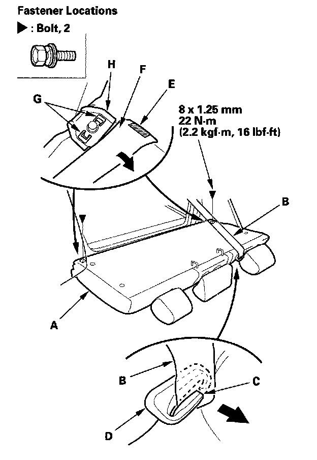
1. Remove the seat-back (A).
1. Fold the seat-back forward.
2. Pull the rear center seat belt (B) out through the slit (C) in the seat belt guide (D).
3. Release the velcro fasteners (E), and pull back the seat-back cover (F), then remove the bolts.
4. Release the hooks (G) of the pivot brackets (H).
2. 2-door: Remove the rear side trim panel.
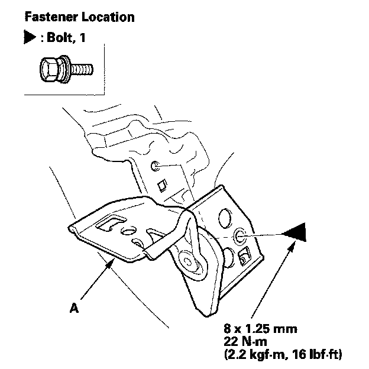
3. Remove the bolt, then remove the pivot bracket (A).
4. Install the seat-back in the reverse order of removal, and note these items:
- Guide the belt over the front of the seat-back as you install the seat-back.
- Before attaching the rear seat-back, make sure there are no twists or kinks in the rear center seat belt.
Seat-back - Split Fold Down
NOTE: Take care not to scratch the body or tear the seat covers.
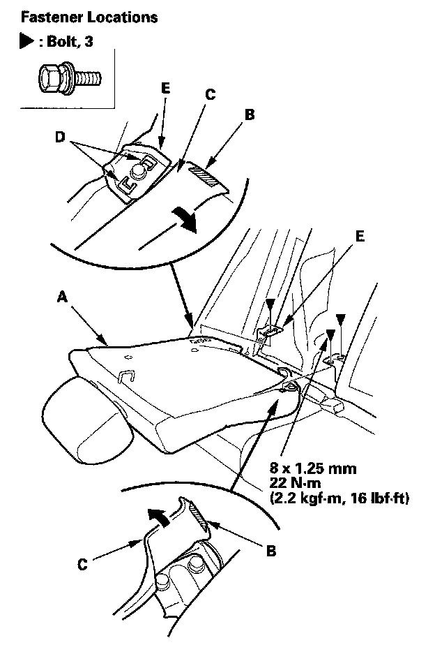
1. Remove the right seat-back (A).
1. Fold the right seat-back forward.
2. Release the velcro fasteners (B), and pull back the seat-back cover (C), then remove the bolts.
3. Release the hooks (D) of the pivot bracket (E).
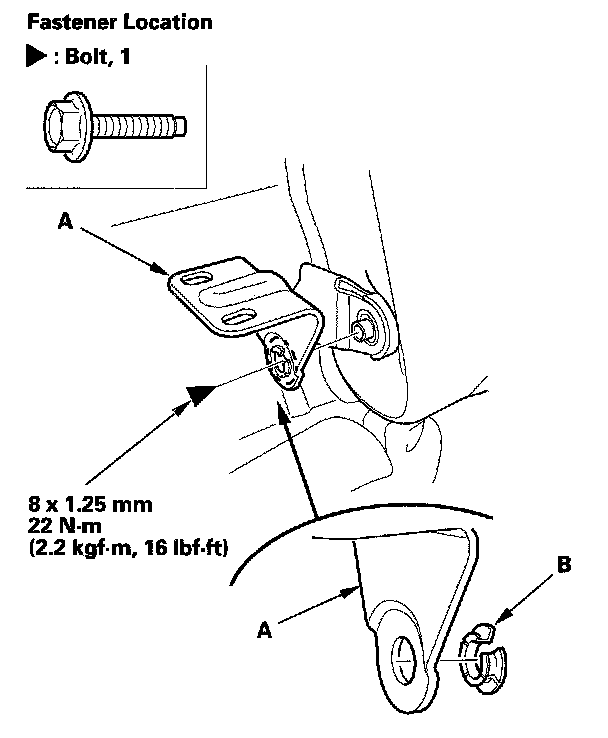
2. Remove the bolt, then remove the center pivot bracket (A).
3. If necessary, remove the bushing (B).
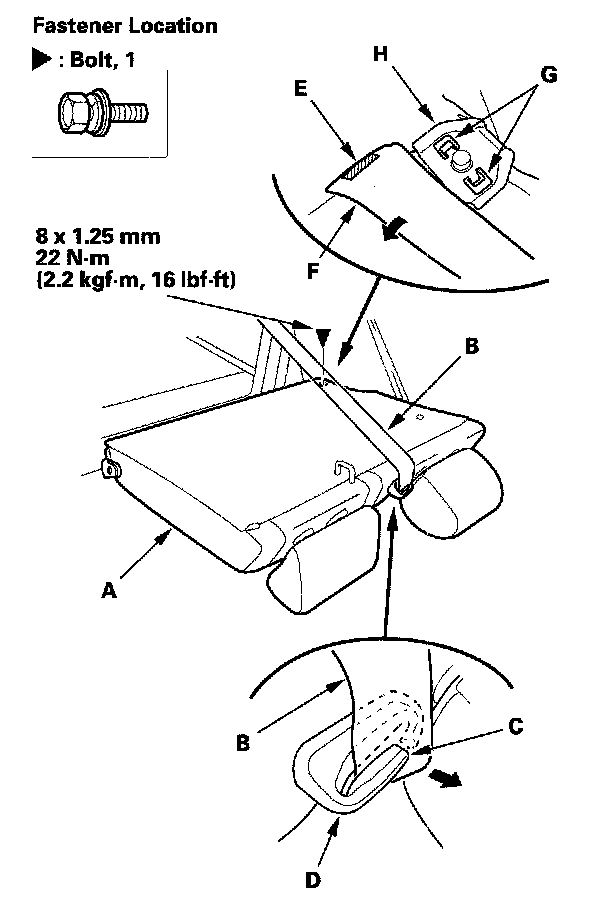
4. Remove the left seat-back (A).
1. Fold the left seat-back forward,
2. Pull the rear center seat belt (B) out through the slit (C) in the seat belt guide (D).
3. Release the velcro fastener (E), and pull back the seat-back cover (F), then remove the bolt.
4. Release the hooks (G) of the pivot bracket (H).
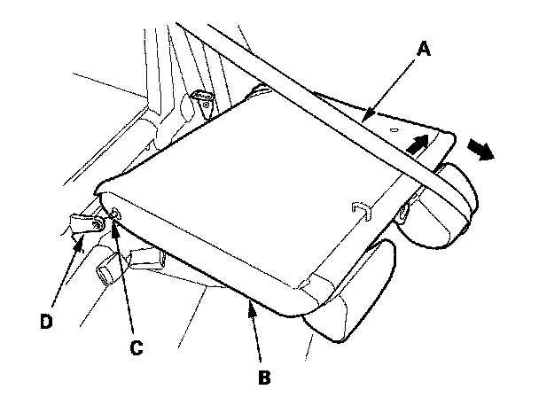
5. Extend the rear center seat belt (A) to remove the left seat-back (B), then release the pivot shaft (C) from the center pivot bracket (D).
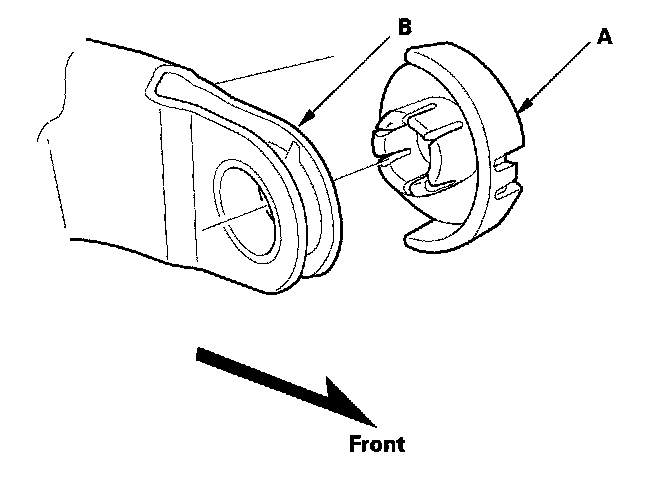
6. If necessary, remove the bushing (A), from the center pivot bracket (B).
7. 2-door: Remove the rear side trim panel.
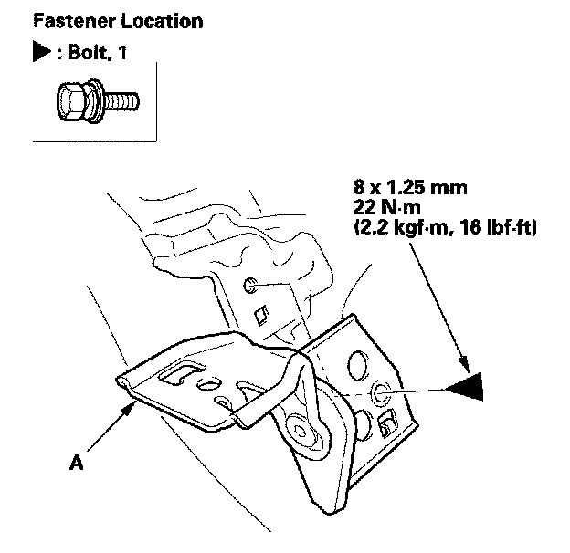
8. Remove the bolt, then remove the pivot bracket (A).
9. Install the seat-back in the reverse order of removal, and note these items:
- Guide the belt over the front of the seat-back as you install the seat-back.
- Before attaching the rear seat-back, make sure there are no twists or kinks in the rear center seat belt.
Seat Cushion
NOTE: Take care not to scratch the body or tear the seat covers.
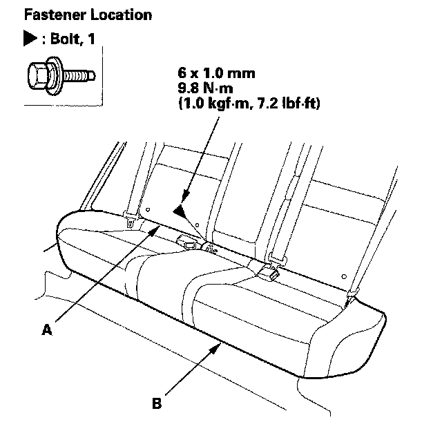
1. Remove the bolt between the seat-back (A) and the seat cushion (B).
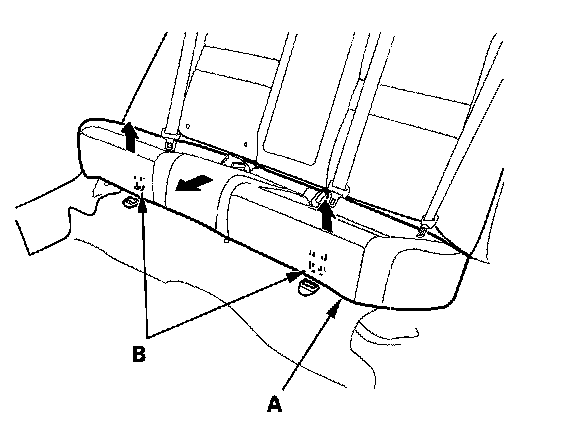
2. Pull each front edge of the seat cushion (A) up to release the hooks (B), then pull back the seat cushion, and remove it.
3. Install the seat cushion in the reverse order of removal, and note these items:
- Before attaching the seat cushion, make sure there are no twists or kinks in the seat belts.
- When installing the seat cushion slip the seat belt buckles through the slits in the seat cushion.
Seat Side Bolster - 4-door
NOTE: Take care not to scratch the body or tear the seat covers.
1. Remove the seat cushion
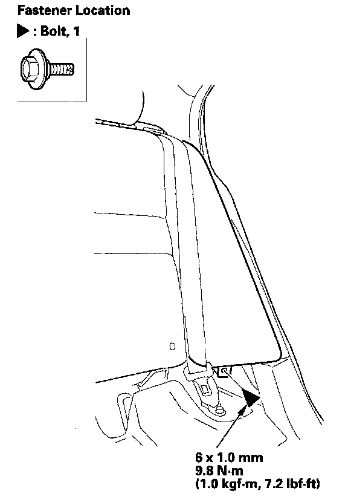
2. Remove the bolt.
3. Fold the seat-back forward.
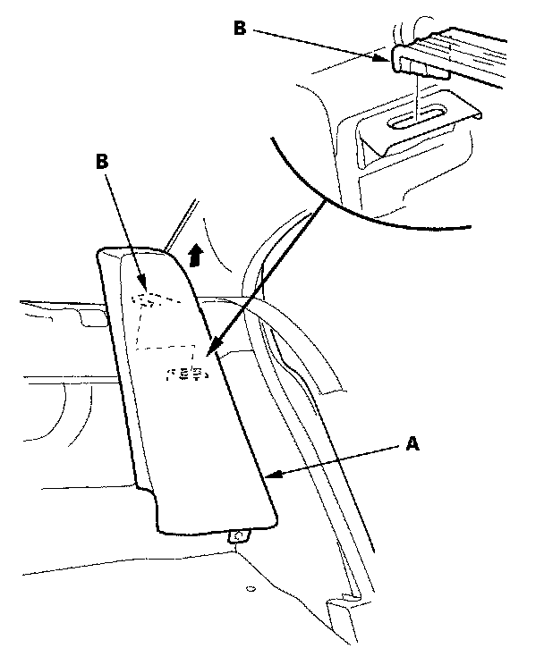
4. Lift the seat side bolster (A) up to release the hook (B), then remove the seat side bolster.
5. Install the seat in the reverse order of removal, and note these items:
- Guide the belts over the front of the seat side bolster as you install the bolster.
- Before attaching the seat side bolster, make sure there are no twists or kinks in the seat belts.